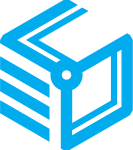

<div class="error-page-wrapper">

    <div class="error-page-center">

      <div class="error-page-logo-area">
        <div class="error-page-logo-img">
            
        </div>
        <div class="error-page-logo-text">{{errorTitle}}</div>
      </div>

      <div class="error-page-info-area" [ngSwitch]="errorId">
        <div class="error-page-describe" *ngSwitchCase="404">
              <ng-container *ngTemplateOutlet="notFound"></ng-container>
        </div>
      </div>
      <div class="cds-version">Connect Device Studio Version {{cdsVersion}}</div>
    </div>
</div>

<ng-template #notFound>
  <p>Page not found.</p>
  <p>Please make sure you type the right url, or click button below to return home page.</p>

  <div class="row error-action-wrapper">
      <div class="col-lg-12">
          <div class="error-btn-wrapper">
            <button class="btn cds-btn-primary error-button" [routerLink]="['/main']">
              <i class="icon-icon-previous error-icon"></i>
              <span>Return</span>
            </button>
          </div>
      </div>
  </div>

</ng-template>
